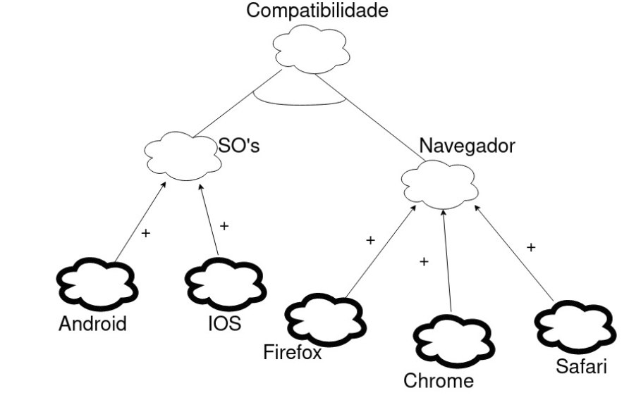
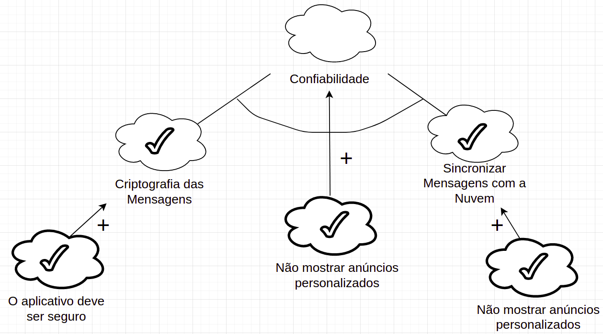
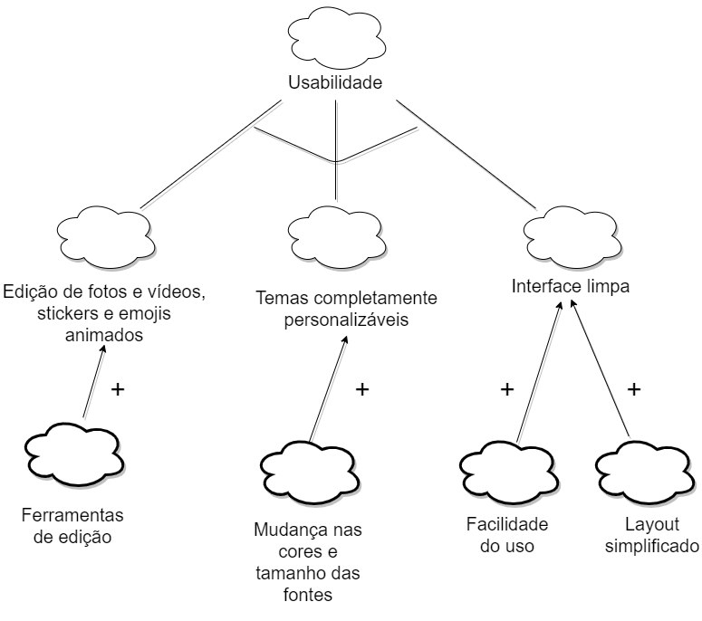

NFR Framework
Introdução
O NFR Framework é uma abordagem para representar e analisar Requisitos Não-Funcionais. Seu objetivo é ajudar desenvolvedores na implementação de soluções personalizadas, levando em consideração as características do domínio e do sistema em questão. Tais características incluem Requisitos Não-funcionais, Requisitos funcionais, prioridades e carga de trabalho. Esses fatores determinam a escolha de alternativas de desenvolvimento para um determinado sistema (CHUNG et al., 2000). O modelo utilizado no NFR Framework é chamado Softgoal Interdependency Graph (SIG).
Foi utilizada a plataforma (inserir) para a criação dos NFR's e logo abaixo eles estão separados pelos tópicos: Usabilidade, Confiabilidade, Performance e Suportabilidade.
Metodologia
Como explicado acima, neste documento estamos focados nos Requisitos Não-Funcionais. Para isso criamos alguns diagramas buscando atingir funcionalidades específicas , fazendo análise das possíveis situações, considerando as aplicações e tecnologias que já existem no aplicativo do Telegram.
Requisitos não Funcionais
Abaixa estão os Requisitos não Funcionais levantados a partir da Especificação Suplementar e serão utilizados na vcriação do NFR Framework
| Número | Requisito |
|---|---|
| RNF-01 | O Telegram deve possuir ferramentas de edição de fotos e vídeos poderosas, stickers e emojis animados, temas completamente personalizáveis e uma plataforma de GIFs/stickers para fornecer toda expressão que o usuário precisar. |
| RNF-02 | O aplicativo deve possuir uma interface limpa que seja tão simples que o usuário já saiba como usar. |
| RNF-03 | O aplicativo deve providenciar a melhor segurança combinada com o uso fácil. |
| RNF-04 | Tudo no Telegram incluindo conversas, grupos, mídias, etc deve ser fortemente criptografado utilizando a combinação simétrica AES de 256-bits, RSA 2048-bits e a troca de chaves seguras Diffie-Heelman. |
| RNF-05 | O aplicativo deverá permitir a exclusão, para ambos os lados, de qualquer mensagem a qualquer momento e sem rastros por parte dos usuários. |
| RNF-06 | O Telegram não utilizará os dados dos usuários para mostrar anúncios. |
| RNF-07 | O aplicativo deve funcionar até nas conexões móveis mais instáveis. |
| RNF-08 | O aplicativo deve ser o mensageiro mais rápido do mercado, conectando as pessoas através de diversos servidores ao redor do mundo. |
| RNF-09 | O sistema deve estar disponível 24h por dia. |
| RNF-10 | O aplicativo deve entregar as mensagens utilizando a menor quantidade de bytes possíveis. |
| RNF-11 | O aplicativo deve permitir a criação de grupos com até 200 mil membros, a compartilhação de forma rápida de vídeos grandes, documentos de qualquer tipos de até 2GB cada, e definir bots para tarefas específicas utilizando a API. |
| RNF-12 | O aplicativo deve permitir o envio de mídias e arquivos sem qualquer limites de tamanho ou tipo. O histórico de conversas não precisará ocupar espaço em disco do dispositivo e deverá ser armazenado de forma segura na nuvem por quanto tempo o usuário precisar. |
| RNF-13 | O usuário deve poder acessar as suas mensagens de todos os seus celulares, tablets e computadores ao mesmo tempo independente do navegador utilizado. |
| RNF-14 | O aplicativo deve ser independente e permitir que o usuário não mantenha o celular conectado. |
| RNF-15 | O Telegram deve possuir uma API completamente gratuita e documentada para desenvolvedores. |
| RNF-16 | O aplicativo deve ter um design de alta compreensão e acessibilidade. |
| RNF-17 | O aplicativo deverá possuir um código fonte aberto e builds verificáveis para provar que o app baixado foi construído usando exatamente o mesmo código fonte que é publicado. |
| RNF-18 | Cores e contraste: o app deve possuir requisitos específicos para a personalização completa das cores no aplicativo, permitindo ser acessível a qualquer pessoa. |
| RNF-19 | O aplicativo deve possuir ícones intuitivos e de fácil visualização para todos usuários e dispositivos. |
| RNF-20 | O aplicativo deverá ter botões bem claros e com boa área de resposta ao clique/touch. |
| RNF-21 | O aplicativo deve possuir alternativas aos elementos sonoros. |
| |RNF-22|O aplicativo deve conter sugestões visuais que garatam as informações das páginas ao usuário.| |RNF-23|O aplicatido deve conter textos descritivos e bem dispostos na tela para melhor leitura dos usuários.| |RNF-24|O aplicativo deve conter clareza nos links mostrados na tela ao usuário.| |RNF-25|O espaço físico utilizado pelo Telegram deve ser o menor possível dentro de seu limite.|
Legenda

Suportabilidade
Sem Propagação

Com Propagação

Sem Propagação

Com Propagação

Confiabilidade
Sem Propagação

Com Propagação

Usabilidade
Sem Propagação

Com Propagação

Referências Bibliográficas
- CHUNG, Lawrence; NIXON, Brian. Nixon, YU, Eric; MYLOPOULOS, John. "Non-Functional Requirements in Software Engineering". Springer US, 2000.
- SILVA, Reinaldo Antônio da. NFR4ES: Um Catálogo de Requisitos Não-Funcionais para Sistemas Embarcados. 2019
Versionamento
| Data | Versão | Descrição | Autor(es) |
|---|---|---|---|
| 01.04.2021 | 0.1 | Criação e adição de tópicos e Introdução | Ítalo Alves |
| 02.04.2021 | 1.0 | Desenvolvimento do Documento | Ítalo Alves, Lucas Boaventura, Tiago Rodrigues |